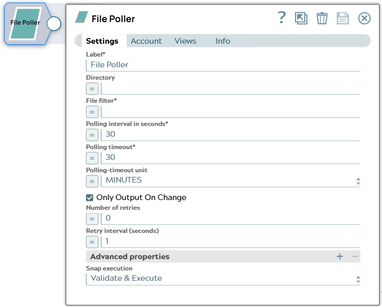
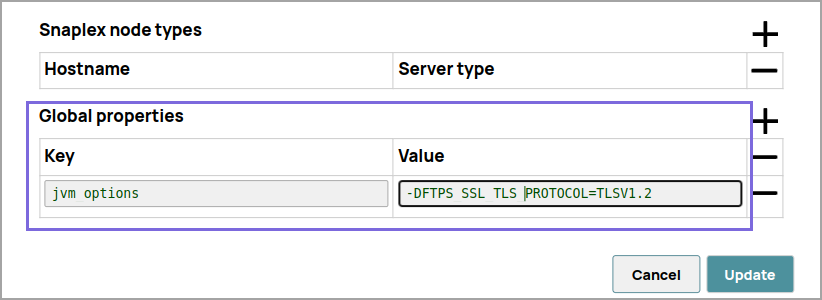
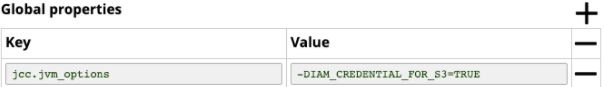

File Poller
 Tip:
Tip:
- The Snap continues polling at the intervals specified in the Polling interval property until the timeout (specified in the Polling timeout property) is reached. After polling is done, the Snap lists all files whose names match the specified pattern.
- This Snap can be used in situations where an operation must be triggered when a specific file is found in the target directory. The pipeline can be configured with additional Snaps to process the Snap's output and delete the matched file before the Polling interval value is reached.
-
The File Poller Snap uses the case-sensitive filter pattern, regardless of the operating system.
 Note:
Note:
You must install the AzCopy utility, if you use the ABFS (Azure Blob File Storage) file protocol Azure Data Lake Gen 2 for bulk operation. The utility must be installed in Snaplex to fetch the file path. If the path is null, the native Azure Storage SDK is used for all operations. Learn more about the AzCopy command. If AzCopy Utility is not installed for ABS file transfer, the file transfer will not be as fast as using AzCopy because a REST call will be invoked for each file content instead of a bulk operation.
The SnapLogic Platform does not support the installation of utilities or processes on Cloudplexes. Learn more.
 Warning: This Snap polls the target directory only. Subdirectories, if any, are
ignored. Use the
Directory Browser
Snap if you
want to poll files in the directory and all subdirectories, and to poll a directory only
once.
Warning: This Snap polls the target directory only. Subdirectories, if any, are
ignored. Use the
Directory Browser
Snap if you
want to poll files in the directory and all subdirectories, and to poll a directory only
once. 
- This is a Read-type Snap. Learn more about Snap Types.
- Works in Ultra Tasks
Prerequisites
The 'IAM_CREDENTIAL_FOR_S3' feature is used to
access S3 files from EC2 Groundplex, without Access-key ID and Secret key in the AWS S3
account in the Snap. The IAM credential stored in the EC2 metadata is used to gain access
rights to the S3 buckets. To enable this feature, set the Global properties (Key-Value
parameters) and restart the JCC:jcc.jvm_options =
-DIAM_CREDENTIAL_FOR_S3=TRUE
This feature is supported in the EC2-type Groundplex only. Learn more.
Connect to FTP server:
To connect to the FTP server that needs to reuse the session for data transfer over TLS protocol, add:
-DFTPS_SSL_TLS_PROTOCOL=TLSV1.2 (or) TLSV1.3property as a
JVM option under the Global properties of the Node
Properties tab:
Limitations
For S3 folders, the Snap currently supports polling the target directory for a maximum of 10,000 files. If there are more than that, the Snap does not provide any output.
Known issues
- The Snap is executed in an EC2-instance Snaplex where your pipeline runs with an IAM role.
- The S3 bucket accessed by the Snap includes the necessary permissions for use with the specific IAM role.
- The following global property is set as a node property in the plex:
jcc.jvm_options = -DIAM_CREDENTIAL_FOR_S3=TRUE
-
This Snap Pack no longer natively supports RSA-SHA1 authentication with the Secure File Transfer Protocol (SFTP). To enable support for RSA-SHA1 authentication, set the following property from the Configuration Options: Node Properties section.
-
Djsch.server_host_key=ssh-rsa -Djsch.client_pubkey=ssh-rsa
With the 4.33 GA release of the
Binary Snap Pack
, support
for some algorithms for SFTP connection negotiation is removed for improved security and
because we’ve updated the library used to connect to SFTP sources. If you want to revert to
the previous settings, you can set the following jcc.jvm_options from the
Node Properties section of Configuration Options. To update
Cloudplexes, contact SnapLogic Support.
-Djsch.kex=ecdh-sha2-nistp256,ecdh-sha2-nistp384,ecdh-sha2-nistp521,diffie-hellman-group14-sha1,diffie-hellman-group-exchange-sha256,diffie-hellman-group-exchange-sha1,diffie-hellman-group1-sha1-Djsch.server_host_key=ssh-rsa,ssh-dss,ecdsa-sha2-nistp256,ecdsa-sha2-nistp384,ecdsa-sha2-nistp521-Djsch.client_pubkey=ssh-rsa,ssh-dss,ecdsa-sha2-nistp256,ecdsa-sha2-nistp384,ecdsa-sha2-nistp521-Djsch.cipher=aes128-ctr,aes128-cbc,3des-ctr,3des-cbc,blowfish-cbc,aes192-ctr,aes192-cbc,aes256-ctr,aes256-cbc-Djsch.check_ciphers=aes256-ctr,aes192-ctr,aes128-ctr,aes256-cbc,aes192-cbc,aes128-cbc,3des-ctr,arcfour,arcfour128,arcfour256-Djsch.check_kexes=diffie-hellman-group14-sha1,ecdh-sha2-nistp256,ecdh-sha2-nistp384,ecdh-sha2-nistp521-Djsch.check_signatures=ecdsa-sha2-nistp256,ecdsa-sha2-nistp384,ecdsa-sha2-nistp521
Behavior changes
The File Poller Snap now honors the value specified in the Polling timeout field instead of polling indefinitely in case of poor file polling operations. To handle indefinite polling operations the polling is done in a separate thread. However, when the execution time exceeds the value specified in the Polling timeout, a timeout exception is written to the log to prevent the polling from getting stuck and the Snap continues polling depending on the Polling timeout.
- If the Polling timeout value is greater than 0, the Snap polls until the end of polling window.
- If it is less than 0, the Snap stops polling.
- If it is -1, the Snap continues polling.
Supported Protocols
Account types supported by each protocol are as follows:
| Protocol | Account types |
|---|---|
| sldb | no account |
| s3 | AWS S3 |
| ftp | Basic Auth |
| sftp | Basic Auth, SSH Auth |
| ftps | Basic Auth |
| hdfs | no account |
| smb | SMB |
| wasb | Azure Storage |
| wasbs | Azure Storage |
| gs | Google Storage |
| file | Local file system |
Warning:
The FTPS file protocol works only in explicit mode. The implicit mode is not supported.
Required settings for account types are as follows:
| Account Type | Settings |
|---|---|
| Basic Auth | Username, Password |
| AWS S3 | Access-key ID, Secret key |
| SSH Auth | Username, Private key, Key Passphrase |
| SMB | Domain, Username, Password |
| Azure Storage | Account name, Primary access key |
| Google Storage |
Approval prompt, Application scope, Auto-refresh token (Read-only properties are Access token, Refresh token, Access token expiration, OAuth2 Endpoint, OAuth2 token and Access type.) |
Snap views
| Type | Description | Examples of upstream and downstream Snaps |
|---|---|---|
| Input | An optional document to evaluate expressions in the Directory and/or File filter properties. Note that each input document will trigger the execution of the Snap. | |
| Output | A full path in each document as a value for a key "path". If multiple files
match the filter, the same number of documents will be provided in the output view
after each interval. |
|
| Learn more about Error handling. | ||
Snap settings
Legend:
- Expression icon (): Allows using pipeline parameters to set field values dynamically (if enabled). SnapLogic Expressions are not supported. If disabled, you can provide a static value.
- SnapGPT (): Generates SnapLogic Expressions based on natural language using SnapGPT. Learn more.
- Suggestion icon (
 ): Populates a
list of values dynamically based on your Snap configuration. You can select only one
attribute at a time using the icon. Type into the field if it supports a comma-separated
list of values.
): Populates a
list of values dynamically based on your Snap configuration. You can select only one
attribute at a time using the icon. Type into the field if it supports a comma-separated
list of values. - Upload : Uploads files. Learn more.
| Field/Field set | Type | Description |
|---|---|---|
Label
|
String | Required. Specify a unique name for the Snap. Modify this to be more appropriate, especially if more than one of the same Snaps is in the pipeline. Default value: File Poller Example: File Poller |
| Directory | String/Expression | Specify the URL path to the directory where files will be searched in the
following format:
The
supported file protocols are:
Note:
Default value: N/A Example:
|
| File filter | String/Expression | Required. Specify a GLOB pattern to be applied to select
one or more files in the directory. The File filter property can be a JavaScript
expression which will be evaluated with values from the input view document.
[None] Refer : Glob Pattern Interpretation Rules Default value: N/A Example:
|
| Polling interval in seconds | IntegerExpression | Required. Specify the time gap between each poll request
(in seconds). Default value: 30 Example: 10 |
| Polling timeout | IntegerExpression | Required. Specify a period of time after which file
polling must end. If the Polling timeout is set to:
Warning: Configure this field based on the expected number of files
in the target directory. If there are many files and this field's value is small,
the Snap may complete the operation and stop before the file is found.
Default value: 30 Example: 20 |
| Polling-timeout unit | Dropdown list/Expression | Specify a value for polling timeout. Default value: MINUTES Example: SECONDS |
| Only Output on Change | Checkbox | Select this check box to instruct the Snap to provide an output only when there
is a change in the contents of the polled directory. When selected, the Snap
provides an output during its initial run if it finds matching documents. However,
it provides polling results in the next run only if the polled directory has
newer files that match the pattern specified. Default status: Selected |
| Number of retries | Integer/Expression | Specify the maximum number of retry attempts that the Snap must make in case
there is a network failure, and the Snap is unable to read the target file.Note:
If the value is larger than 0, the Snap first downloads the target file into a temporary local file. If any error occurs during the download, the Snap waits for the time specified in the Retry interval and attempts to download the file again from the beginning. When the download is successful, the Snap streams the data from the temporary file to the downstream Pipeline. All temporary local files are deleted when they are no longer needed. Ensure that the local drive has sufficient free disk space to store the temporary local file. Minimum value: 0 Default value: 0 Example: 3 |
| Retry interval (seconds) | Integer/Expression | Specify the minimum number of seconds for which the Snap must wait before
attempting recovery from a network failure. Minimum value: 1 Default value: 1 Example: 3 |
| Advanced properties | Use this field set to define specific settings for polling files. | |
| Properties | Dropdown list | Choose either of the following options:
|
| Values | String/Expression |
Warning:
|
| Snap execution
|
Dropdown list |
Choose one of the three modes in
which the Snap executes. Available options are:
Default value: Execute only Example: Validate & Execute |
Glob Pattern Interpretation Rules
-
*.java Matches file names ending in .java.
-
*.* Matches file names containing a dot.
-
*.{java,class} Matches file names ending with .java or .class.
-
foo.? Matches file names starting with foo. and a single character extension.
- The * character matches zero or more characters of a name component without crossing directory boundaries.
- The ? character matches exactly one character of a name component.
- The backslash character (\) is used to escape characters that would otherwise be interpreted as special characters. For example, the expression \\ matches a single backslash, and "\{" matches a left brace.
- The ! character is used to exclude matching files from the output.
- The [ ] characters are a bracket expression that match a single character of a name component out of a set of characters. For example, [abc] matches 'a', 'b', or 'c'. The hyphen (-) may be used to specify a range; so, [a-z] specifies a range that matches from 'a' to 'z' (inclusive). These forms can be mixed; so, [abce-g] matches 'a'", 'b', 'c', 'e', 'f' or 'g'. If the character after the '[' is an '!', then it is used for negation; so, [!a-c] matches any character except 'a', 'b', or 'c'.
- Within a bracket expression, the *, ?, and \ characters match themselves. The (-) character matches itself if it is the first character within the brackets, or the first character after the '!', if negating.
- The { } characters are a group of subpatterns, where the group matches if any subpattern in the group matches. The ',' character is used to separate subpatterns. Groups cannot be nested.
- Leading period / dot characters in file names are treated as regular characters in match operations. For example, the '*' glob pattern matches file name '.login'.
- Some special characters are not supported. A partial list of unsupported special characters: #, ^, â, ê, î, ç, ¿, SPACE.
Troubleshooting
| Error | Reason | Resolution |
|---|---|---|
Algorithm negotiation fail: algorithmName="server_host_key"
jschProposal="<algorithms>" serverProposal="ssh-rsa" |
The library that we use for SFTP connections no longer supports deprecated signature protocols by default. This changed with the 4.33 GA release. | Add the algorithm to the serverProposal in the global
properties.You can also enable support for RSA-SHA1 authentication in the Node
Properties tab on the Updating a Snaplex
dialog in SnapLogic Manager.
Learn more: Configuration Options |
com.amazonaws.AbortedException - Cannot access AWS S3
service |
If you have set the Polling Timeout value to a few seconds, it results in the S3 request getting canceled. |
Increase the value of Polling Timeout (in seconds) for the Snap to work successfully. We recommend that you set the Polling Timeout value to the default value of 30 minutes or more to fetch all the data from S3. |
Examples
- ../../examples/core/sp-binary/snap-file-poller/example-write-a-list-of-files-in-a-specific-directory/example-write-a-list-of-files-in-a-specific-directory.html
- ../../examples/core/sp-binary/snap-file-poller/example-poll-a-directory-using-a-trigger-task-from-servicenow/example-poll-a-directory-using-a-trigger-task.html